Silver
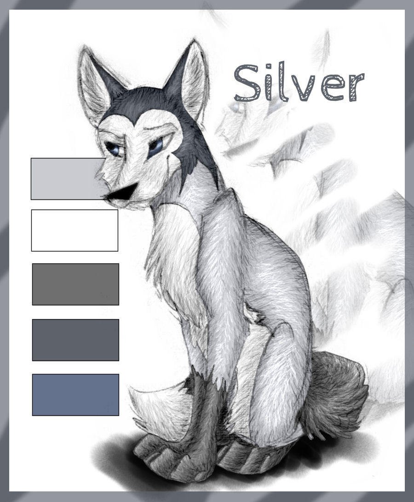
Spoiler Alert!
Silver lebt in einer Traumwelt, die zerbricht, als ihr kleiner Bruder Munter stirbt. Die Reise die sie
daraufhin antritt, ist eine Reise des Erwachsenwerdens. Alles, was sie bisher gekannt hat, wurde ihr
entrissen, so muss sie langsam wieder lernen, wem und was sie vertrauen kann. Da die Stützen ihres
bisherigen Lebens zusammen gefallen sind, ist sie auf der anderen Seite auch wieder (unbewusst)
sehr zugänglich für Neues – zum Beispiel für die Freundschaft zu einer Pflanzenfresserin, die trotz
Fressfeindschaft emotional gesehen ihren Verlust mit am besten verstehen kann.
Außerdem hat die Füchsin eine besondere Beziehung zum Mond, die ihre noch bestehende Bindung
zum Traumhaften kennzeichnet und der ihr oft Antworten weist. Eine Fähigkeit, zu der sie wie zu
allem anderen Vertrauen aufbauen muss, denn es handelt sich nur um einen Aspekt ihres
übernatürlichen Talents.
Silver entwickelt Freundschaften zu anderen Tieren, muss weiterhin konstant um ihr Leben
kämpfen, wobei sie jedoch dank dieser Freundschaften physisch und psychisch stärker wird. Sie
gerät in Fehden, verliebt sich und verarbeitet während all dieser Zeit den ursprünglichen Grund für
den Einschnitt in ihrem Leben – den Verlust ihres Bruders, zu dem sie noch mehr Kontakt hat, als
man annehmen könnte.
Marder
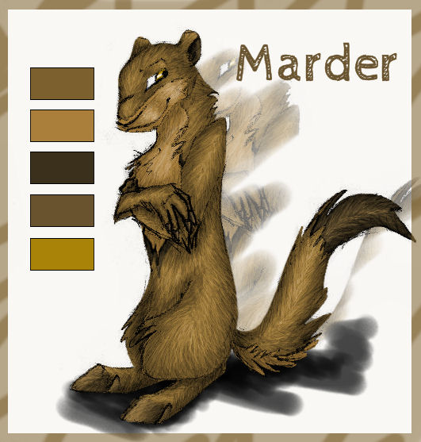
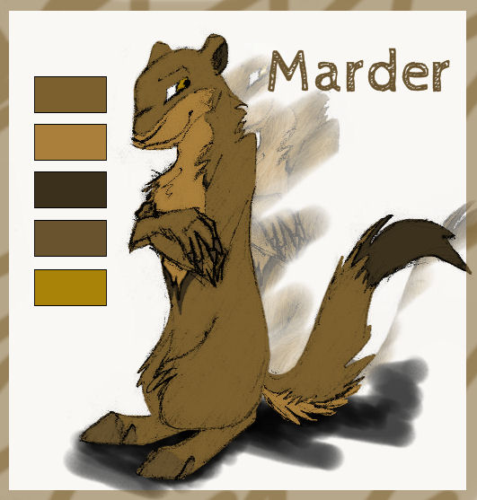
Spoiler Alert!
Der Marder ist in eine Abhängigkeit von einer Gruppe von Wildkatzen geraten, nachdem er zuvor
seine eigenen Leute hintergangen hat, die ihn daraufhin zusammen geschlagen und allein zurück
gelassen haben. Zunächst denkt er darüber nach – mit den Wildkatzen im Nacken – auch Silver zu
hintergehen, sie tun sich aber schließlich zusammen, um sich beide aus einer gefährlichen Situation
zu retten. Daraufhin entwickelt sich eine tiefe Freundschaft, die noch lange anhalten wird.
Own
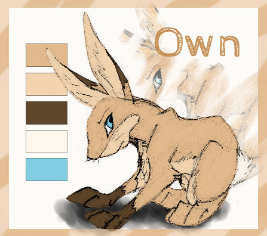
Spoiler Alert!
Own wird als emotionsloser Charakter eingeführt wird, der höchstens Misstrauen gegenüber
anderen empfindet. Silver begegnet ihr, als sie sie zu ihrem Mittagessen machen möchte, sie geraten
jedoch in eine Situation, aus der Own sie beide (nicht absichtlich) retten kann. Own schließt sich
Silver und dem Marder aus Gründen an, die für beide nicht ersichtlich sind. Mit der Zeit stellt sich
heraus, dass Own zutiefst traumatisiert ist, da sie ihre ganze Familie in einem Feuer verloren hat, als
sie noch ein Kind war. Auch für sie ist die entstehende ungewöhnliche Gruppe eine Möglichkeit,
über sich heraus zu wachsen und sich zu öffnen.
Bluefire
Spoiler Alert!
Bluefire (ein Fuchs mit ungewöhnlich blau schimmerndem Fell) begegnet Silver als
Leidensgenosse, als diese entführt wird. Der Grund für die Entführung hat mit den sogenannten
‚Schatten‘ zu tun, eine Gruppe von Tieren, die sich laut Gerüchten ebenfalls über die
Gesetzlichkeiten von Fleisch- und Pflanzenfressern hinweg setzten. Bluefires Familie hat
wahrscheinlich mit diesen Schatten zu tun, wobei dieser beteuert, er wisse nichts genaueres darüber.
Das Verhältnis zu seinen Eltern ist allerdings sehr schlecht, was ihn emotional sehr verschlossen macht.
Dies zeigt sich nicht wie bei Own, so geht er
oberflächlich normal mit anderen um, doch als sich Gefühle zwischen ihm und Silver entwickeln,
macht sich das deutlich bemerkbar.
Crass
Spoiler Alert!
Als die Gruppe gezwungen ist sich wegen Jagden in einen bestimmten Wald zu flüchten, begegnen
sie Crass, dem Revierinhaber des Waldes. Der sarkastische und unergründliche Fuchswolf lässt sie
für eine Gegenleistung bei ihm wohnen, doch scheint er zusätzlich auch noch viel Gefallen daran zu
finden, ihre Abhängigkeit zu ihm auszunutzen und mit ihnen zu spielen. So macht er sich auf der
einen Seite lustig über ihre seltsame Zusammenstellung von Fleisch- und Pflanzenfresser, testet
deren Beziehung zueinander jedoch auf der anderen Seite mit einer gewissen Faszination. Immerhin
ist der Hybrid ja auch selbst kein gewöhnliches Tier.
Sage und Whitestar
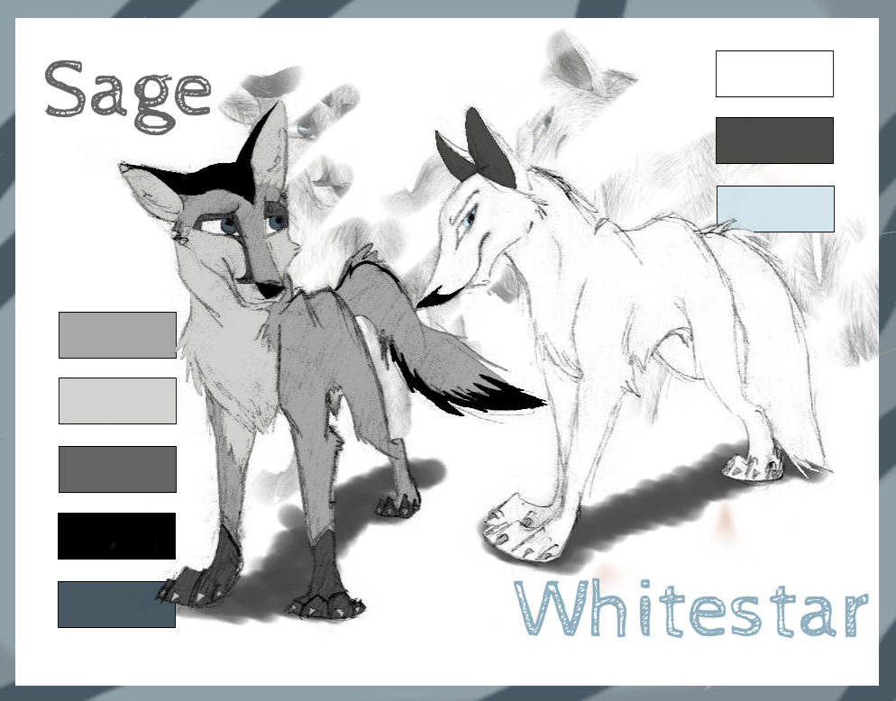
Spoiler Alert!
Sage und Whitestar sind die Eltern von Silver. Während er den besonnenen Part übernimmt, ist sie
die Emotionalere, Energischere und zuweilen auch Hysterische. Ein Schicksalsschlag folgt dem
nächsten. Nachdem ihr jüngster Sohn Munter gestorben ist und sich dann auch noch Silver von
ihnen getrennt hat, kommen obendrein noch Jäger in ihren Wald und sie sind gezwungen, ebenfalls
fort zu ziehen. Die Wilderer sind aber nicht zufällig in jenem Wäldchen, da silbernes Fell sehr
wertvoll ist. Whitestars und Sages Vorfahren sind durch eine Pelzfarm in dieses Land gekommen,
was sie ihren Kindern bisher verschwiegen hatten.
Stürmisch
Spoiler Alert!
Stürmisch ist Silvers älterer Bruder. Er ist das Gegenteil von ihr und Munter – wild, ungestüm und
mit gelegentlicher Selbstüberschätzung. Dies führt ihn zu Anfang häufig in gefährliche und auch
demütigende Situationen, in denen er lernen muss, wo seine Grenzen liegen.
Als er mit seinen Eltern flieht, kommen sie in einen anderen Wald mit einer Rotfuchsfamilie, bei
denen sie Zuflucht suchen. Er verliebt sich in die junge Rotfüchsin Zart, die seine Gefühle auch
erwidert. Allerdings wird die Beziehung von ihrem Bruder Wind manipuliert. Außerdem ist ihre
Großmutter Wintry auch strikt gegen die Neulinge und greift dabei zu immer extremeren
Maßnahmen, was Stürmisch am eigenen Leib erfahren muss.
Munter
Spoiler Alert!
Munter ist der Bruder von Silver und Stürmisch. Ihn und Silver verbindet
eine träumerische Ader, die sie in ihrer kindlichen Art mit niemandem so gut teilen können wie mit dem jeweils anderen.
Genau diese Traumwelt abseits von der realen wird Munter jedoch zum Verhängnis, indem er beim Spielen die Straße nicht
beachten und von einem Auto erfasst wird. Daraufhin beginnt er jedoch, in Silvers Träumen zu erscheinen.
Kühl
Spoiler Alert!
Kühl ist der Anführer der Familie, hat ein starkes und selbstsicheres Auftreten, worunter eine immer
präsente Unsicherheit liegt, die er hauptsächlich mithilfe seiner Gefährtin Heart unter Kontrolle hat.
Sein Verhältnis zu seiner Mutter Wintry ist von Dominanz, Misstrauen und Machtspielchen geprägt.
Er möchte nicht so werden wie sie, trifft ihr gegenüber jedoch manchmal Entscheidungen, die ihm
zu genau dem werden lassen. Sein Wandeln zwischen Gerechtigkeit und Eigennutz findet
manchmal auf einem dünnen Grad statt und der Konflikt, der sich zwischen Wintry und der
Silberfuchsfamilie zuspitzt, stellt seine Integrität auf eine Probe.
Heart
Spoiler Alert!
Heart ist die Gefährtin Kühls. Sie ist neben Silver ein weiterer Charakter, der womöglich eine besondere
Gabe besitzt, die sie oft bei verworrenen Situationen den
Überblick bewahren lässt. Im Gegensatz zu ihrem Gefährten lässt sie sich nicht auf physische
Auseinandersetzungen ein, sondern agiert als oftmals einzig verbliebener Ruhepol.
Wintry
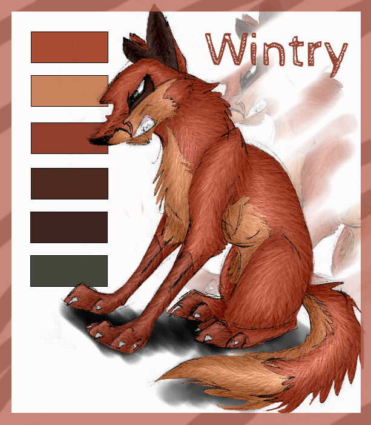
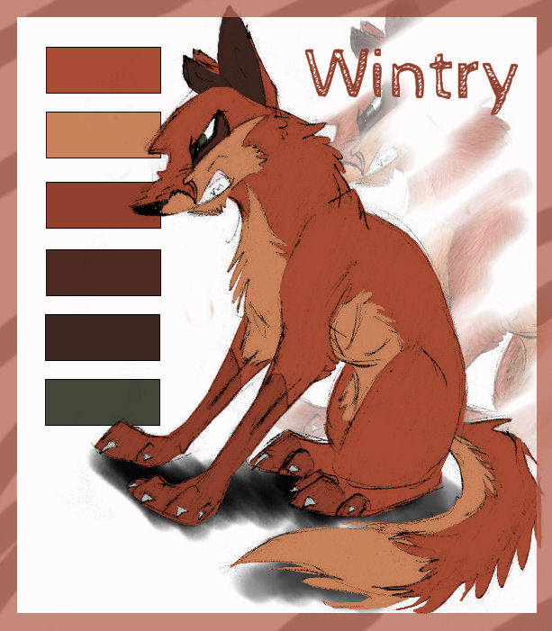
Spoiler Alert!
Wintry ist die Mutter Kühls und Antagonist der Silberfüchse. Als frühere Entscheidungsträgerin der
Familie fällt es ihr schwer, die Macht an ihren Sohn abzugeben. Sie sieht nicht ein, dass sie früher
ihr Land gegen eine andere Rotfuchsfamilie verteidigt hat, wobei ihr Gefährte das Leben lassen musste,
und Kühl den neuen Eindringlingen
einfach Eintritt gewährt. Während sich ihr Hass aufbaut, verliert sie jedoch mehr und mehr den
Bezug zur Realität und greift zu immer extremeren Maßnahmen.
Wind
Spoiler Alert!
Wind ist der Sohn Kühl und Hearts. Er ist durchtrieben und beobachtet alles mit einer gewissen
Rationalität, auch wenn er seine Schläue gerne dazu nutzt, das zu bekommen, was er möchte. So ist
er sich bewusst, dass es sich bei dem Aufnehmen der Silberfüchse um einen Machtkampf zwischen
seinem Vater und seiner Großmutter handelt, mag jedoch Stürmischs Art nicht und wie dieser sich
seiner Schwester Zart annähert, die ihm viel bedeutet.
Er tut sich mit seiner Großmutter Wintry zusammen, um gegen die Silberfüchse vorzugehen,
allerdings wird schon bald klar, dass sich ihre Methoden sehr unterscheiden. Als ihm außerdem
bewusst wird, wie sehr Zart unter seinen Manipulationen leidet, kommen in ihm tatsächlich
Schuldgefühle auf, die ihn seine Position in der immer verzwickter werdenden Situation
überdenken lassen.
Zart
Spoiler Alert!
Zart findet Gefallen an Stürmischs Annäherungsversuchen und entwickelt kurz darauf auch Gefühle
für ihn. Sie wurde emotional jedoch bereits schon einmal von jemandem verletzt, was Wind dazu
nutzt, um Zweifel zu sähen. Ihre Beziehung zu Stürmisch steht daher schon fast von Beginn an
unter keinem guten Stern und zerbröckelt, bevor sie richtig aufgebaut ist.
Sie hat ein gutes Bruder-Schwester-Verhältnis zu Wind, das durch dessen Handlungen sehr
erschüttert wird.
Cunning
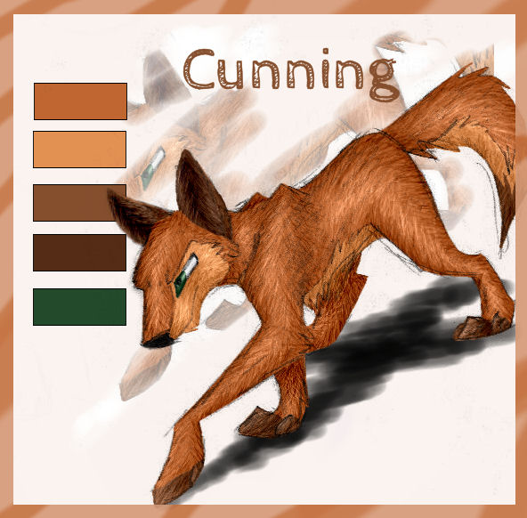
Spoiler Alert!
Cunning ist das dritte Kind von Kühl und Heart. Er bemerkt als erster, dass etwas zwischen Zart und Stürmisch vorgefallen ist,
mit dem sich eine Freundschaft bildet. Er ist derjenige, der beide Parteien dazu bringt, sich wieder anzunähern,
ohne jedoch Winds Beteiligung daran zu erkennen.
Dry
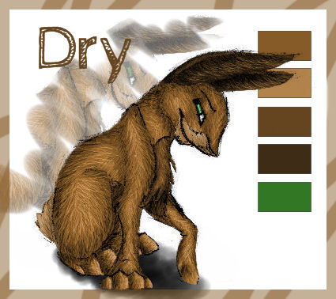
Spoiler Alert!
Dry trifft erst spät auf die Gruppe von Silver durch Own. Er ist ein Draufgänger, der sich
eigentlich nicht wirklich für die Gruppe interesssiert, Own jedoch erhascht mit ihrer veschlossenen und doch sehr direkten Art
seine Aufmerksamkeit. Von der Herausforderung ihre Schale zu knacken getrieben, entschließt er sich am Ende mit ihnen den Wald von Crass zu verlassen.
Vinous
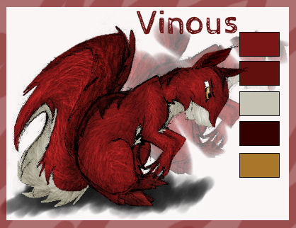
Spoiler Alert!
Vinous wird durch Owns Initiative vor dem Verdursten gerettet. Er ist ein analytischer Denker, hält sich jedoch mit Informationen über sich zurück.
Auch er hat eine gewisse Fasziation für die Gruppe, weswegen er sich nicht wieder komplett zurückzieht und ihnen in manchen Situationen sogar hilft.


 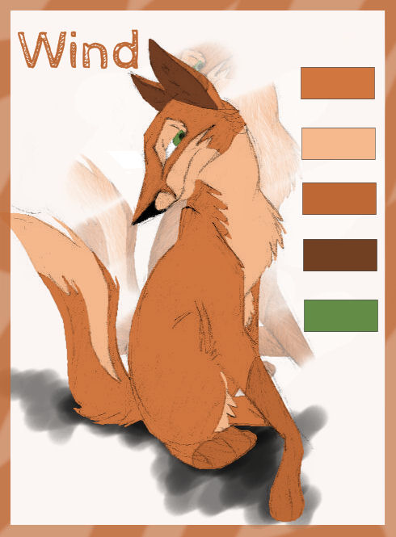
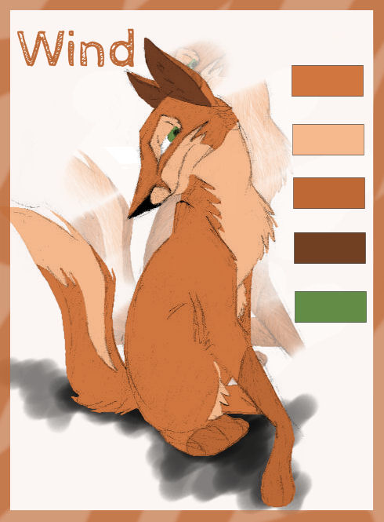